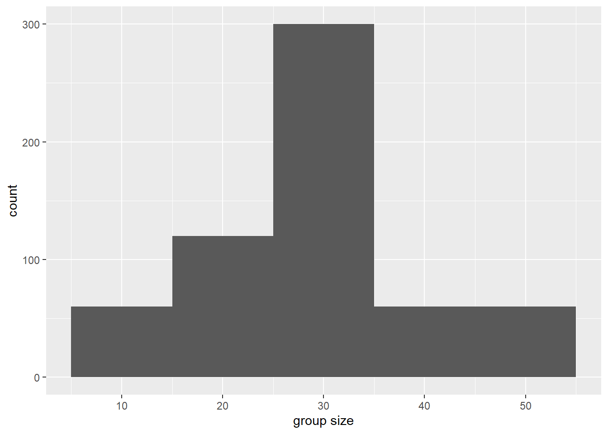

library(tidyverse)
## There are many cool color palettes... pick a handful to explore
library(PNWColors) # color palettes
library(ggsci) # color palettes
library(colorspace) # color palettes
library(viridis) # color palettes
library(RColorBrewer) # color palettes1. Analyse calling behavior in Cook Inlet beluga whales
Data visualization with R and ggplot2
Background
In this script, we will analyze calling behavior in Cook Inlet beluga whales using a dataset from Arial Brewer that includes visual data on group size, behavior, calf presence, and calling rates (combined calls, whistles, and pulsed calls). We will visualize the distributions of these variables and explore how calling behavior varies with group size, behavior, and calf presence. We will also explore how calling behavior changes as we approach behavioral transitions.

Arial Brewer SAFS, Whale and Dolphin Ecology Lab PhD Student
Arial earned a Bachelor of Science degree in Marine Biology from the University of California, Santa Cruz in 2010, and is a marine mammal biologist at NOAA focusing on the acoustic ecology and behavior of cetaceans. Arial has previously worked as a marine mammal trainer and field biologist and has participated in marine mammal surveys off the coasts of Mexico, California, Oregon, Washington, British Columbia, Alaska and Hawaii.At SAFS, Arial is investigating the vocal behavior, kinship, and microbiome variability of the endangered Cook Inlet beluga whale population in Alaska.
Voices of the Sea link

Important
Explore the data in regards to your guiding research question (either Q1 or Q2!)
Remember the scientific method steps:
Step 1: Hypotheses and variables
- Write down your null and alternative hypotheses. Identify x and y variables.
Step 2: Explore the data visually
Step 3: Choose an appropriate model
- Categorical data: ANOVA
aov() - Continuous data: linear regression
lm() - Is the relationship significant?
- Is the relationship positive or negative?
Step 1. Hypotheses and variables
Open an Rmd document in R.
Write down your null and alternative hypotheses. Identify x and y variables.
Set up your environment
Load libraries
Tip
In R, you only need to install packages into your library once…(until you update R, then packages may need to be re-installed). To install a new package that you have not yet installed, use the install.packages("package_name") function. You can run this line of code in your console (not in the script) to install any packages you don’t have yet.
For example, you may need to run install.packages("ggsci") to install the ggsci package.
Load your data
Important
Pay attention to your file paths! You may need to change the file path below depending on where your data file is located relative to your working directory. Here, we assume you are working from a .Rmd script that is saved in your code folder, and the data file is located in a folder called data that is one level up from code. It’s important to explicitly load your data in the script, if you use the “import data” GUi option that is not the tidyverse way because it isn’t reproducible !
Tip
As a reminder, you can insert a new code chunk with the keyboard shortcut Ctrl + Alt + I (Windows) or Cmd + Option + I (Mac).
- Look at your data! Can you find your x and y variables as columns of your data?
Initial data exploration
Q1: Do belugas use different types of calls in different behavioral or groups contexts?
Write down your null and alternative hypotheses. Identify x and y variables.
When visualizing distributions with geom_histogram(), ggplot expects you to pass a single value to the x aesthetic.
If we want to visualize counts of group sizes, we pass group_size to the x variable.
ggplot(data = data, aes(x=group_size)) +
geom_histogram(binwidth=10) +
xlab("group size")
Tip
What happens when you change the binwidth? Try changing it to 5 or 20 and see how the histogram changes.
Now it’s your turn: Create some histograms!
Create histograms like the one above for the following variables:
combined_callwhistlepulsed_call
Important
What do you notice about the distributions? Are they normally distributed? Skewed?
Explore using other methods to visualize distribution data. Try:
geom_boxplot()geom_violin()
Important
Create exploratory visualizations and statistical tests to answer your falsifiable hypothesis.
You will want to pivot the dataframe with
pivot_longer()so that you can compare all call types at once!
Tip
Remember to use your help function ?pivot_longer to learn more about what that function does and what it expects as inputs and the syntax for those inputs
Q2: Does beluga vocal behavior (number or type of calls) change as we approach a change in group behavior?
When visualizing counts of calls over time approaching a behavioral transition with geom_bar(), ggplot expects you to pass a single value to the x aesthetic (e.g., timediff_transition), and a single value to the y aesthetic (e.g., combined_call, whistle, or pulsed_call).
ggplot(data = data, aes(x = timediff_transition, y = combined_call)) +
geom_bar(stat = "identity") +
theme_minimal()
Write down your null and alternative hypotheses. Identify x and y variables.
Tip
What happens when you change the geom from geom_bar() to geom_point() or geom_jitter()? Try it out and see how the plot changes.
Now it’s your turn: Create some data exporation visualizations!
Create visualizations like the one above for the following variables:
whistlepulsed_call
Important
What do you notice about the distributions? Are they normally distributed? Skewed?
You will want to pivot the dataframe with
pivot_longer()so that you can compare all call types at once!
Tip
Remember to use your help function ?pivot_longer to learn more about what that function does and what it expects as inputs and the syntax for those inputs
Important
Create exploratory visualizations and statistical tests to answer your falsifiable hypothesis.
Step 2. Wrangle and visualize the data
Tip
If your x and y variables are not columns, wrangle your dataset so that they are. Plot!
geom_bar()geom_point()geom_smooth()
Step 3. Model the relationship
Choose an appropriate model
Categorical data:
- ANOVA
aov()
- ANOVA
Continuous data:
- linear regression
lm()
- linear regression
Is the relationship significant?
Is the relationship positive or negative?
Lab reports
Important
Your lab report should include the following components:
- Your falsifiable hypothesis
- The results of your statistical analysis
- A figure visualizing your results
- A determination of whether you do or do not reject your hypothesis.
Knitting a lab report
When you’re ready to knit your .Rmd or .qmd file into a final report, click the “Knit” or “Render” button at the top of the script editor in RStudio. This will generate an HTML (or PDF/Word if you choose) document that includes both your code and the output (figures, tables, etc.) from running that code.
You can control what is printed by each chunk across the script by including a setup chunk at the top of your document. A setup chunk is a special code chunk that sets global options for all code chunks in the document. A setup chunk could look like this:
# This is the setup chunk
knitr::opts_chunk$set(
echo = TRUE, # Display code chunks
eval = TRUE, # Evaluate code chunks
warning = FALSE, # Hide warnings
message = FALSE, # Hide messages
comment = "") # Prevents appending '##' to beginning of lines in code output)) In the setup chunk above, we set options to display code (echo = TRUE), evaluate code (eval = TRUE), and hide warnings and messages. Make sure you name the setup chunk by including setup after the {r, in the chunk header (e.g., {r, setup, include=FALSE}). By typing include=FALSE in the setup chunk header, we prevent the setup chunk itself from being displayed in the final document.
Coincidentally, this is how we set options for individual chunks by adding parameters to the chunk header (e.g., {r, echo=FALSE} to hide code for that specific chunk). You can also click the settings wheel icon in the top right corner of any code chunk in RStudio to set chunk options via a graphical user interface (GUI).

Experiment with including various chunk options and compare your knitted / rendered documents to see the differences.
Data visualization with ggplot2 tips & resources
Checkout great examples of
ggplot2usage in the R graph galleryReview
ggplot2structure with theggplot2:cheatsheetTry using
facet_wrap()orfacet_grid()to create plot multiples based on a categorical variable (pass the categrorical variable to the~argument insidefacet_wrap()orfacet_grid()). An example might befacet_wrap(~behavior)to create separate plots for each behavior type.Make visually appealing plots by customizing colors, themes, and labels. Some useful functions include:
scale_color_manual()andscale_fill_manual()to customize colorstheme_minimal(),theme_classic(),theme_bw(), etc. to change overall plot themexlab(),ylab(), andggtitle()to add axis labels and titles
There are many gorgeous color palettes available in
Rpackages likePNWColors,colorspace,RColorBrewer, andviridis. Explore these packages to find color schemes that enhance your visualizations.